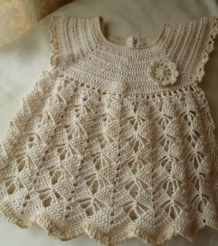

Мастер-классы вязания детской одежды
Детские платья крючком
Ниже представлены схемы для вязания нескольких моделей красивых платьев для девочек.
Ажурное платье
Платье с ленточкой
Ажурное платье
Такое платье сможет связать даже начинающая мастерица. Главное - следовать приведенной схеме и быть внимательной! =)
Платье с ленточкой
Чтобы связать вот такое милое платьице для малышки, вам потребуется:
- белая мерсеризованная тонкая пряжа;
- подходящий по размеру крючок для вязания;
- атласная лента персикового оттенка, шириной 1 см.
Описание работы.
1.Вязать платье следует начинать с его верхней части – кокетки.
Для этого необходимо набрать цепочку, состоящую из 52-х воздушных петель и далее вязать по предложенной ниже схеме.
Обратите внимание, на спинке кокетки остается разрез для будущей застежки.
2.После того как кокетка платья будет готова,
можно переходить к выполнению юбки, для этого необходимо выполнить равномерное прибавление петель по кругу кокетки,
так как это показано на выкройке и далее вязать изделие фантазийным узором, схема которого прилагается.
Также вы можете выбрать любой другой узор и выполнить ажурную юбку так, как вам подсказывает фантазия.
3.Когда платье будет готово остается лишь обвязать горловину и задние полочки застежки одним рядом столбиков с накидом. Также можно обвязать рукава, используя для этого один рядок фантазийного узора.
4.Для украшения платья следует взять атласную ленточку и протянуть её по линии талии между ажурными петлями, так, чтобы её оба края оказались по центру спереди. Из них можно завязать аккуратный бантик. Также из ленты формируется небольшая розочка, которая пришивается на кокетку. Кроме этого дополнительно платье можно задекорировать бусинами, стразами, пайетками, искусственными цветочками и т.д.
Вход
Еще не зарегистрировались?
Регистрация
Контакты